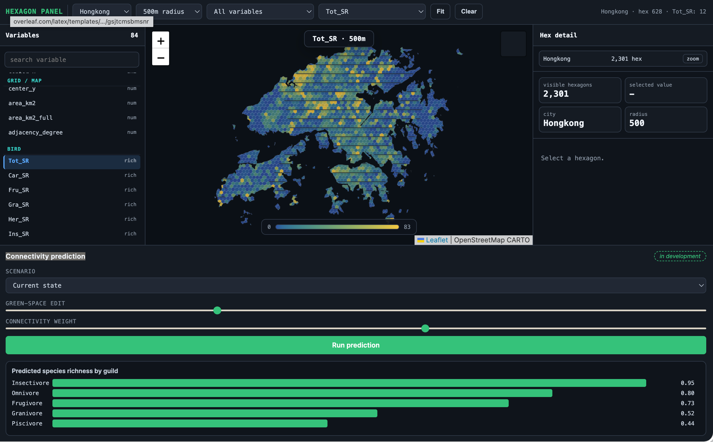
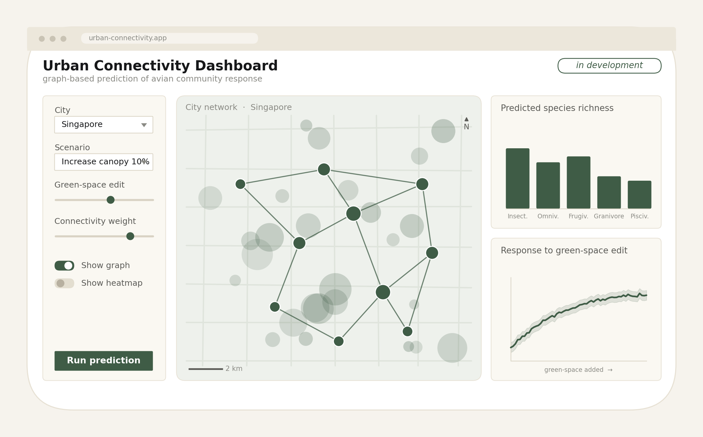

I am developing graph-based models that read a city as a network of connected green, grey, and blue spaces rather than a set of separate metrics, and relate that structure to the bird communities it supports.

Landscape metrics summarise a place one variable at a time, and lose the relations between patches that birds actually move through. A graph keeps those relations, so connectivity, adjacency, and structure enter the model directly.
The aim is to move from isolated landscape metrics toward models of connected grey, green, and blue systems and the bird communities that respond to them, and to test how green space configuration in redevelopment would change predicted biodiversity.
